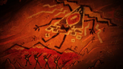
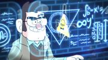
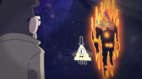

БИЛЛ ШИФР
Билл Шифр (ориг. Bill Cipher) — магическое создание, могущественный демон, способный войти в подсознание человека, а также главный антагонист сериала. Билл известен своим таинственным поведением и садистским юмором. Наводил ужас в Гравити Фолз, с тех пор, как был вызван Фордом Пайнсом более тридцати лет назад. Является главным антагонистом Гравити Фолз, несмотря на то, что он не играл важной роли вплоть до эпизода «Пленники разума». Он, а также символ, на котором он основан (Всевидящее око), часто появляются в Гравити Фолз. Билл Шифр также был невидимым автором криптограмм в онлайн-игре Rumble's Revenge, где его имя выводится путем сложения всех заглавных букв в криптограммах. В результате получится: «МЕНЯ ЗОВУТ БИЛЛ».
История
Билл Шифр появился на свет в двумерном измерении триллион лет назад до событий самого сериала. Билл презирал это место, описывая его как измерение «плоских умов в плоском мире с плоскими мечтами». Он «освободил» своё измерение, погрузив его в пылающий хаос вместе со всеми, кого он когда-то знал, в том числе и своими собственными родителями[6]. В конце концов, он захватил и превратил в логово для себя и своих прихвостней клубящуюся, вечно движущуюся межгалактическую пену между измерениями: лишённое законов и стабильности пространство между мирами, известное как Царство Кошмаров. К сожалению, из-за отсутствия там каких-либо законов, в том числе и законов физики, рано или поздно оно обречено на саморазрушение. С тех пор он искал способы выбраться оттуда, пока за миллиард лет до событий сериала, ему не удалось узнать о пророчестве, гласившим, что он объединит Царство Кошмаров с трёхмерным измерением. Он начал манипулировать бесчисленным количеством людей, дабы стать достичь этой цели и стать физическим существом.  Без физической формы, Билл мог только посещать сны обитателей измерения. Среди его целей были и туземцы, жившие в том месте, где в дальнейшем возникнет городок Гравити Фолз, штат Орегон. Он попросил шамана по имени Модок построить межзвездные врата, ведущие к измерению Кошмаров. Туземцы исполнили его воли и построили врата, пусть и из прутьев. После того как Модок узнал о пророчестве, что предсказывало апокалиптическое событие, он поджег себя в попытке остановить правление Билла. Долина была прозвана «проклятой землей», а туземцы поспешили её покинуть[6]. Им удалось победить Билла, используя зодиак с десятью символами; они оставили картину в пещере, отображающую их борьбу с Биллом, а также информацию о том, как его вызвать, и, что еще более важно, предупреждение: «никогда не читать» там написанное.  В конце двадцатого века, молодой ученый по имени Стэнфорд Пайнс, который провел последние шесть лет, исследуя множество городских аномалий и странностей, задумался: почему же в Гравити Фолз так много аномалий и откуда они берутся? В поисках ответа он нашел пещеру, заполненную загадочными иероглифами, что дало ему надежду познать ответы — сообщение в пещере говорило о всезнающей сущности. Невзирая на предупреждение, Форд произнес заклинание вслух, вызвав Билла в свой разум. Билл быстро смекнул, что целеустремленный, обладающий выдающимся умом, но доверчивый Форд был бы его идеальной пешкой. Он обманул Форда, представившись ему музой, вдохновляющей великие умы. Он сообщил Форду, что источником аномалий города является другое измерение, странности которого просочились в этот мир. С помощью Билла, Форд подготовил чертежи для создания вселенского портала под его домом, а также пригласил на работу своего друга из университета — Фиддлфорда Макгакета.  18 января 1982 года Форд и Фиддлфорд выполнили первое испытание работающей машины, которое быстро пошло не по плану. Манекен потащил с собой в портал Фиддлфорда. Хотя Форд быстро спас его, Фиддлфорд вернулся с ужасными видениями, предсказывающими апокалиптическую катастрофу. Макгакет просил Форда уничтожить машину, но он не согласился отказаться от работы всей его жизни, после чего Макгакет покинул проект. Во время разговора со своим бывшим союзником — Биллом, Форд узнает, что портал позволит демонам принести хаос и разрушения во вселенную. Испуганный и преданный, Форд закрывает проект и создает проект «Mentem», способный защитить от влияния Билла. К сожалению, страх перед неизбежным возвращением Билла приводит Форда к отказу от своих исследований и сокрытию инструкций по работе с порталом. Последующие тридцать лет Билл проводит, выжидая повторного включения портала.
Описание
Хотя Билл был стерт и более не существует, предполагается, что он еще может каким-то образом вернуться. Незадолго до исчезновения он передает искаженное сообщение: «А-К-С-О-Л-О-Т-Л-Ь! Пришло мое время гореть, я призываю древнюю силу, я могу вернуться!».
В одном из возможных сценариев из книги «Диппер, Мэйбл и проклятие сокровищ Пиратов Времени!: Выбери своё собственное приключение», Диппер и Мэйбл оказываются в «пространстве и времени между временем и пространством», где они сталкиваются с огромным говорящим аксолотлем, который позволяет каждому из них задать по одному вопросу. Диппер спрашивает его о Билле Шифре, на что он отвечает в стихотворной форме:
Шестьдесят градусов, что сходятся в трех.
Наблюдает из-за березовых древ.
Видел, как мир сгорел до тла.
Хотел вернуться он, но все зря.
Говорит, что счастлив.
Он лжет.
Винит огонь в поджоге тот.
Если захочет снять он вину,
Пусть имя мое он взовёт на кону.
Один есть лишь путь снять свои обвинения.
Другая форма, другое время.
Это говорит о том, что, ссылаясь на Аксолотля, Билл хочет освободиться от своих преступлений, ведь есть один способ, чтобы возвратиться: ему придется принять «другую форму» в «другое время». Это означает, что Билл все еще может быть жив, расплачиваясь за свои преступления. Хотя большая часть книги не является каноном, так как она следует формату «выбери свое собственное приключение», этот ответ может быть «одним огромным» каноном, «секретно» сообщил Алекс Хирш. Встреча с Аксолотлем закончилась отправкой Диппера и Мэйбл назад, в прошлое, без воспоминаний о случившемся.Возможное появление Билла подразумевалось в игре Cipher Hunt, где Алекс Хирш предупреждает искателей сокровищ никогда не пожимать руку статуе, даже если она должна быть мертва (впрочем, группа нашедшая статую, все же пожала ей руку). Также, финальное сообщение Стэна начинается с песни «Встретимся вновь», Стэн даже призывают искателей пожать руку Билла, подразумевая, что Билл жив и использует свое тело.
Так же, если вспомнить устройство Стирателя памяти, то вполне возможно, что Билл Шифр не исчез, а заточён в капсуле, в которой содержатся стёртые воспоминания.